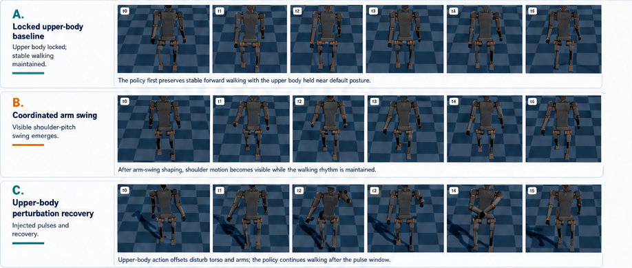
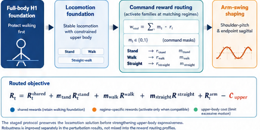
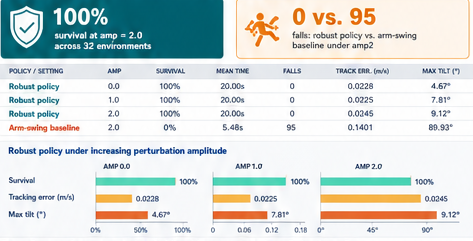
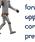
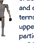
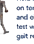

Stable Arm-Swing Humanoid Locomotion
under Upper-Body Perturbations
under Upper-Body Perturbations
A staged reward-routing curriculum preserves full-body walking, introduces coordinated
shoulder-pitch arm swing, and evaluates recovery under torso, shoulder, and elbow action pulses.
shoulder-pitch arm swing, and evaluates recovery under torso, shoulder, and elbow action pulses.
Course Project Team ? H1 Humanoid ? 19DoF full-body control ? Headless evaluation in Genesis


Robust walking is learned
without freezing upper-body motion.
without freezing upper-body motion.
The final policy survives strong upper-body perturbations while retaining visible shoulder swing and forward command tracking.
19
CONTROLLED
DoF
DoF
32
PARALLEL
ENVS
ENVS
20s
EVAL
HORIZON
HORIZON
0
FALLS AT
AMP2
AMP2
Dynamic Evidence: from Locked Upper Body to Perturbation Recovery
Figure 1 ? Temporal Rollouts

Problem formulation
Once the upper body is unlocked, humanoid locomotion is no longer only a lower-body tracking problem. Torso, shoulder, and elbow actions perturb angular momentum while walking; the goal is stable walking without first freezing the upper body.
Contributions
? Full 19DoF H1 control in a 19DoF action space.
? Command-routed reward families that protect walking before arm shaping.
? Upper-body action-pulse evaluation on torso, shoulder, and elbow channels.
? Qualitative temporal evidence paired with finite-horizon metrics.
? Command-routed reward families that protect walking before arm shaping.
? Upper-body action-pulse evaluation on torso, shoulder, and elbow channels.
? Qualitative temporal evidence paired with finite-horizon metrics.
Evaluation protocol
We evaluate 32 parallel H1 humanoids for a 20 s horizon. Upper-body action pulses are applied to torso, shoulder, and elbow channels while the forward command remains active in a straight-walk task.
Metrics reported
Survival counts environments without non-timeout resets. Tracking error measures forward velocity deviation. Max tilt uses the projected-gravity tilt proxy and exposes perturbation-induced posture excursions.
Task-to-benchmark mapping
Forward locomotion H1 20s command tracking under pulse sets
Upper-body motion Visible shoulder-pitch swing synchronized with walking
Robustness Recovery after held upper-body offset pulses
Upper-body motion Visible shoulder-pitch swing synchronized with walking
Robustness Recovery after held upper-body offset pulses
Design principle
Locomotion is protected before expressiveness is added. Command-derived masks activate standing, walking, and straight-walk reward terms only in compatible regimes.
Result interpretation
Recovery success is not used as the headline baseline comparison because a policy may briefly satisfy the recovery criterion after some pulses while still repeatedly resetting. Survival, falls, and max tilt are more decisive.
Reading the rows
Row A verifies the stable walking foundation. Row B shows visible gait-synchronized arm swing. Row C shows a perturbed upper body returning to forward walking.
Method: Staged Reward Routing

The controller is trained in the full 19DoF H1 action space. Stable locomotion is protected first; command masks then activate stand, walk, and straight-walk reward families so arm-swing objectives appear mainly when they are compatible with forward walking.
Quantitative Robustness under Upper-Body Pulses

Experimental Story
1
2
3
R





Locomotion
foundation
foundation
Full-body H1 walks forward while the upper body is constrained to preserve a reliable gait.
Command-routed
preparation
preparation
Stand, walk, and straight-walk masks reduce interference between posture, gait, and arm objectives.
Coordinated
arm swing
arm swing
Shoulder-pitch phase and endpoint-sagittal terms make the upper body visibly participate in walking.
Perturbation-
robust policy
robust policy
Held action offsets on torso, shoulder, and elbow channels test whether the gait recovers.
Limitations
? Evidence is simulation-only and short-horizon.
? Upper-body naturalness is shaped by hand-designed phase and amplitude rewards rather than human motion priors.
? Future work should add angular-momentum analysis, energy cost, longer horizons, and cleaner camera evaluation.
? Upper-body naturalness is shaped by hand-designed phase and amplitude rewards rather than human motion priors.
? Future work should add angular-momentum analysis, energy cost, longer horizons, and cleaner camera evaluation.
Conclusion
The final controller demonstrates stable forward walking, visible arm swing, and bounded recovery behavior under explicit upper-body disturbances, forming a compact paper-style story from curriculum design to quantitative robustness.